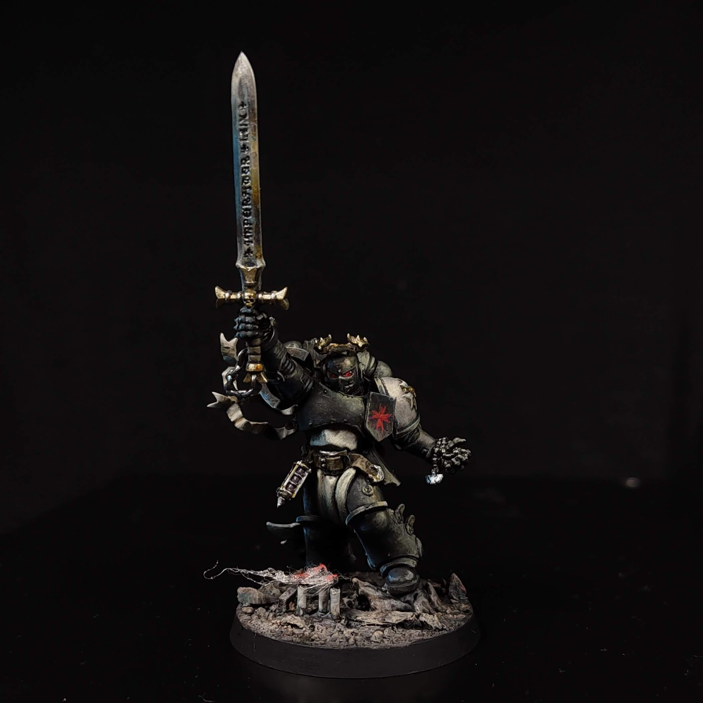
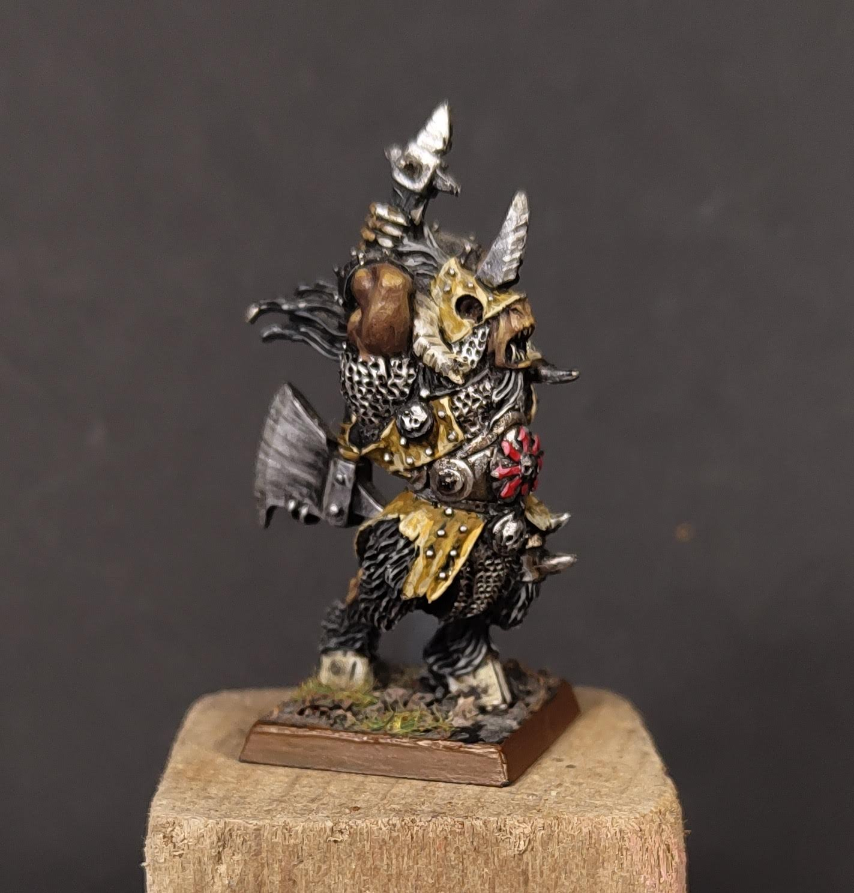

I painted this on with a limited, classic palette of white, yellow, red, blue and umber.
He is lit by two light, one warm from the upper left, and a second cool one from the bottom right.
This is an older model I painted in the early 2000's. It's not the greatest I've painted, but I keep on my desk to remind myself how far along I've come.
